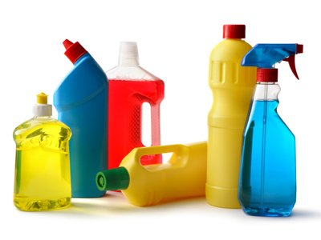
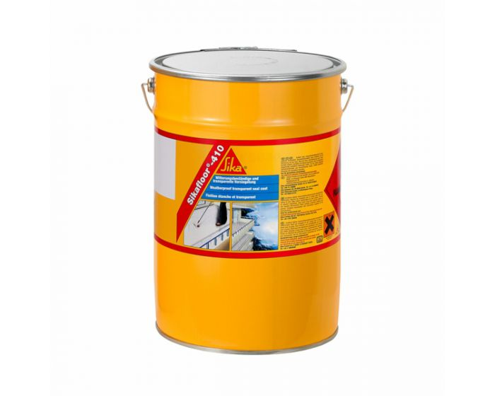

<!doctype html>
<html>
<head>
<meta charset="utf-8">
<title>Untitled Document</title>
</head>

<body>
</body>
</html>

<head>
<link rel="preconnect" href="https://fonts.gstatic.com">
<link href="https://fonts.googleapis.com/css2?family=Chango&display=swap" rel="stylesheet">
<style>


<link rel="preconnect" href="https://fonts.gstatic.com">
<link href="https://fonts.googleapis.com/css2?family=Chango&family=Ranchers&display=swap" rel="stylesheet">
<style>


header {
text-align: center;
}
div {position:static;

text-align: center;
display: block;
}
html {
background-image: url("ozadje.jpg");
background-repeat:repeat-y;
background-size: cover;
}

#penis {
font-style: italic;

}
#quote {
position:static;
bottom: 20%;
}
#slika {
margin-left: 30%;
width: 40%;
}
.kurac {

margin-top: 10%;
text-align: center;

}

#naslov {
color: #2C344E;
font-family: 'Ranchers', cursive;
}

</style>
<meta charset="utf-8">
<title></title>
</head>
</html>
<header>
 <center> <h1 id="naslov"><strong>Uporaba nanodelcev v kemiji </strong></h1></center>
</header>

<p><h2>Kataliza</h2></p>

<p><h3>Nanodelce se v kemijski industriji uporablja za pospeševanje kemijskih reakcij pri procesu katalize. Z uporabo nanodelcev se posledično zmanjša število katalitskih materialov, ki so potrebni za potek kemijskih reakcij (primera sta rafiniranje nafte in delovanje avtomobilskega katalizatorja). To vodi k manjšemu onesnaževanju okolja in cenejši proizvodnji.</h3></p>

<p><h2>Gospodinjska sredstva</h2></p>

<p><h3>Čistilna sredstva in drugi gospodinjski izdelki, kot so razmaščevalci in sredstva za odstranjevanje madežev, antibakterijska čistila, specializirane barve in tesnilni izdelki, kot so samočistilne hišne barve, ki so odporne na umazanijo – vsebujejo nanodelce, ki izboljšajo njihovo učinkovitost delovanja in obstojnost (barve in laki).</h3></p>

<center></center>

<p><h2>Zaščitni premazi</h2></p>

<p><h3>Nekateri zaščitni premazi za tla in druge vpojne površine so odporni na umazanijo in obrabo prav zaradi uporabe nanodelcev. Nanodelci podaljšujejo življenjsko dobo s premazom zaščitene površine. Dobra plat nano-premazov je tudi v tem, da ne vsebujejo silikona, voskov in olj. Obstojnost premazov je lahko 10 ali celo 15 let, saj nanodelci tvorijo UV stabilen zaščitni sloj.</h3></p>

<center></center>

<div class="kurac">
<p><h3><a href="Spletna stran 5.html">Nazaj</a> <a href="https://inter4life.github.io/bine_animacija/2.html">Domov</a> <a href="Spletna stran 7.html">Naprej</a></h3></p>
</div>